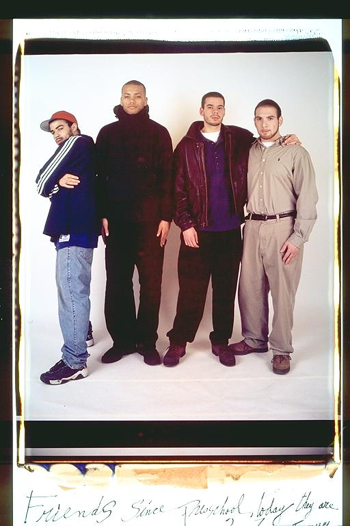

Casey: It was a cold January day when I first saw the world's biggest Polaroid. I was hanging around with Eugene and Isaac who I had went to another high school with and was currently going to Rindge and Latin with as well. I felt a bit ackward joining the long-standing tradition of the photographed friends but Elsa and the guys made me feel at home. In the following years the pictures have become a testament to our friendship as we have grown from boys to men. Every time we take pictures the jokes and comraderie and our desire to express ourselves visually turn into memories we can always come back to.
Aldo: In this picture we all look like were trying to be stylish. At this point Eugene was in his fraternity, so he looks quite serious. He was actually pledging so it was probably quite difficult for him. As for the rest of us we were just home hanging out from our normal college lives.
Eugene: "First Day On-Line" -- Although I was very busy and about to begin pledging Alpha Phi Alpha, I couldn't let my lifetime friends down by not appearing with them in the annual birthday photo shoot. I remember thinking "If I look relaxed and "chill" and people look back at this photo and look at the date, they will think I was laxed. I had to look serious and pressed, because of the situation I was in. This picture also says a lot about our different characters and personalities.
Isaac: Beards seem to have been the style of the moment. Eugene was pledging his fraternity and looked a mess. I remember thinking "Man, he's only just started pledging. He's gonna die!" However, in the end, as always, he succeeded. This might have been Casey's first photo. God wanted Casey and me to be friends. We went to 2 high schools and college together. We didn't really like each other at first, and didn't become close friends until my sophomore year in college. It took years, but now he's one of my closest friends.
